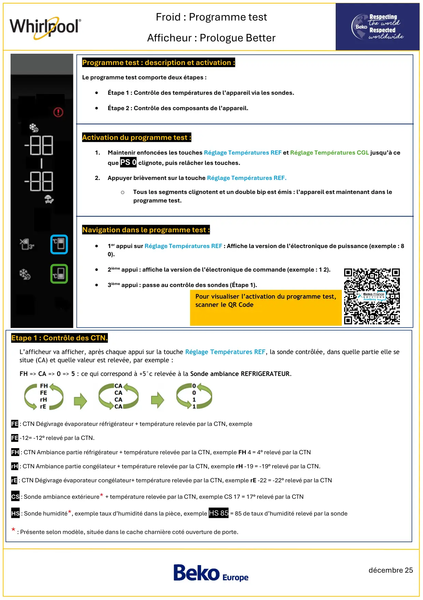
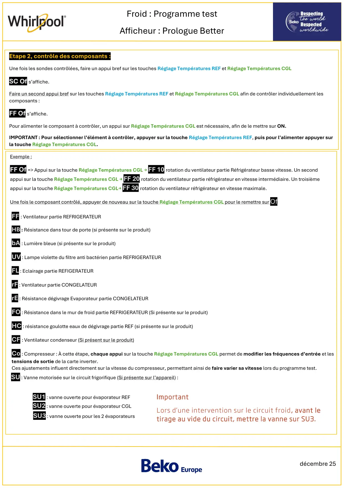
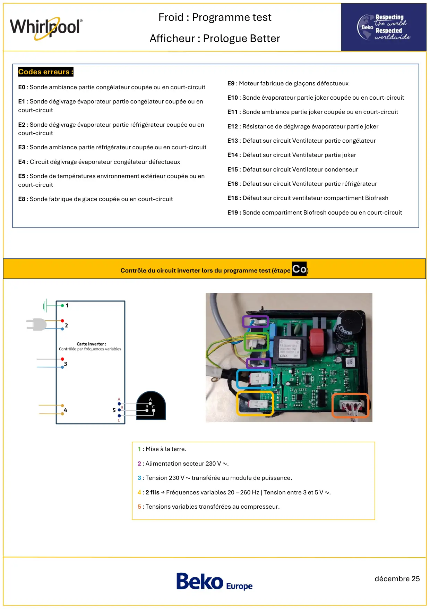
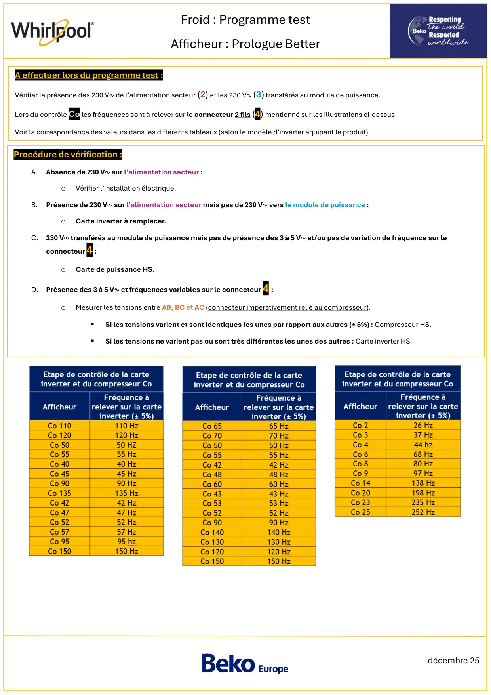

Prog Test Froid Electronique Prologue Better

décembre 25Froid : Programme testAfficheur : Prologue BetterProgramme test : description et activation :Le programme test comporte deux étapes :•Étape 1 : Contrôle des températures de l’appareil via les sondes.•Étape 2 : Contrôle des composants de l’appareil.Activation du programme test :1.Maintenir enfoncées les touches Réglage Températures REF et Réglage Températures CGL jusqu’à ceque PS 0 clignote, puis relâcher les touches.2.Appuyer brièvement sur la touche Réglage Températures REF.oTous les segments clignotent et un double bip est émis : l’appareil est maintenant dans leprogramme test.Navigation dans le programme test :•1er appui sur Réglage Températures REF : Affiche la version de l’électronique de puissance (exemple : 80).•2ième appui : affiche la version de l’électronique de commande (exemple : 1 2).•3ième appui : passe au contrôle des sondes (Étape 1).Etape 1 : Contrôle des CTN.FE : CTN Dégivrage évaporateur réfrigérateur + température relevée par la CTN, exempleFE -12= -12° relevé par la CTN.FH : CTN Ambiance partie réfrigérateur + température relevée par la CTN, exemple FH 4 = 4° relevé par la CTNrH : CTN Ambiance partie congélateur + température relevée par la CTN, exemple rH -19 = -19° relevé par la CTN.rE : CTN Dégivrage évaporateur congélateur+ température relevée par la CTN, exemple rE -22 = -22° relevé par la CTNCS : Sonde ambiance extérieure* + température relevée par la CTN, exemple CS 17 = 17° relevé par la CTNHS : Sonde humidité*, exemple taux d’humidité dans la pièce, exemple HS 85 = 85 de taux d’humidité relevé par la sonde* : Présente selon modèle, située dans le cache charnière coté ouverture de porte.L’afficheur va afficher, après chaque appui sur la touche Réglage Températures REF, la sonde contrôlée, dans quelle partie elle sesitue (CA) et quelle valeur est relevée, par exemple :FH => CA => 0 => 5 : ce qui correspond à +5°c relevée à la Sonde ambiance REFRIGERATEUR.Pour visualiser l’activation du programme test,scanner le QR Code
1 / 4
décembre 25Froid : Programme testAfficheur : Prologue BetterEtape 2, contrôle des composants :Une fois les sondes contrôlées, faire un appui bref sur les touches Réglage Températures REF et Réglage Températures CGLSC Of s’affiche.Faire un second appui bref sur les touches Réglage Températures REF et Réglage Températures CGL afin de contrôler individuellement lescomposants :FF Of s’affiche.Pour alimenter le composant à contrôler, un appui sur Réglage Températures CGL est nécessaire, afin de le mettre sur ON.IMPORTANT : Pour sélectionner l’élément à contrôler, appuyer sur la touche Réglage Températures REF, puis pour l’alimenter appuyer surla touche Réglage Températures CGL.Exemple :FF Of => Appui sur la touche Réglage Températures CGL → FF 10 rotation du ventilateur partie Réfrigérateur basse vitesse. Un secondappui sur la touche Réglage Températures CGL → FF 20 rotation du ventilateur partie réfrigérateur en vitesse intermédiaire. Un troisièmeappui sur la touche Réglage Températures CGL→ FF 30 rotation du ventilateur réfrigérateur en vitesse maximale.Une fois le composant contrôlé, appuyer de nouveau sur la touche Réglage Températures CGL pour le remettre sur OfSU : Vanne motorisée sur le circuit frigorifique (Si présente sur l’appareil) :SU1 : vanne ouverte pour évaporateur REFSU2 : vanne ouverte pour évaporateur CGLSU3 : vanne ouverte pour les 2 évaporateursImportantLors d’une intervention sur le circuit froid, avant letirage au vide du circuit, mettre la vanne sur SU3.FF : Ventilateur partie REFRIGERATEURHB : Résistance dans tour de porte (si présente sur le produit)bA : Lumière bleue (si présente sur le produit)UV : Lampe violette du filtre anti bactérien partie REFRIGERATEURFL : Eclairage partie REFIGERATEURrF : Ventilateur partie CONGELATEURrE : Résistance dégivrage Evaporateur partie CONGELATEURFO : Résistance dans le mur de froid partie REFRIGERATEUR (Si présente sur le produit)HC : résistance goulotte eaux de dégivrage partie REF (si présente sur le produit)CF : Ventilateur condenseur (Si présent sur le produit)Co : Compresseur : À cette étape, chaque appui sur la touche Réglage Températures CGL permet de modifier les fréquences d’entrée et lestensions de sortie de la carte inverter.Ces ajustements influent directement sur la vitesse du compresseur, permettant ainsi de faire varier sa vitesse lors du programme test.
2 / 4
décembre 25Froid : Programme testAfficheur : Prologue BetterCodes erreurs :E0 : Sonde ambiance partie congélateur coupée ou en court-circuitE1 : Sonde dégivrage évaporateur partie congélateur coupée ou encourt-circuitE2 : Sonde dégivrage évaporateur partie réfrigérateur coupée ou encourt-circuitE3 : Sonde ambiance partie réfrigérateur coupée ou en court-circuitE4 : Circuit dégivrage évaporateur congélateur défectueuxE5 : Sonde de températures environnement extérieur coupée ou encourt-circuitE8 : Sonde fabrique de glace coupée ou en court-circuitE9 : Moteur fabrique de glaçons défectueuxE10 : Sonde évaporateur partie joker coupée ou en court-circuitE11 : Sonde ambiance partie joker coupée ou en court-circuitE12 : Résistance de dégivrage évaporateur partie jokerE13 : Défaut sur circuit Ventilateur partie congélateurE14 : Défaut sur circuit Ventilateur partie jokerE15 : Défaut sur circuit Ventilateur condenseurE16 : Défaut sur circuit Ventilateur partie réfrigérateurE18 : Défaut sur circuit ventilateur compartiment BiofreshE19 : Sonde compartiment Biofresh coupée ou en court-circuit1 : Mise à la terre.2 : Alimentation secteur 230 V ∿.3 : Tension 230 V ∿ transférée au module de puissance.4 : 2 fils → Fréquences variables 20 – 260 Hz | Tension entre 3 et 5 V ∿.5 : Tensions variables transférées au compresseur.Contrôle du circuit inverter lors du programme test (étape Co)
3 / 4
décembre 25Froid : Programme testAfficheur : Prologue BetterProcédure de vérification :A.Absence de 230 V∿ sur l’alimentation secteur :oVérifier l’installation électrique.B.Présence de 230 V∿ sur l’alimentation secteur mais pas de 230 V∿ vers le module de puissance :oCarte inverter à remplacer.C. 230 V∿ transférés au module de puissance mais pas de présence des 3 à 5 V∿ et/ou pas de variation de fréquence sur leconnecteur 4 :oCarte de puissance HS.D. Présence des 3 à 5 V∿ et fréquences variables sur le connecteur 4 :oMesurer les tensions entre AB, BC et AC (connecteur impérativement relié au compresseur).▪Si les tensions varient et sont identiques les unes par rapport aux autres (± 5%) : Compresseur HS.▪Si les tensions ne varient pas ou sont très différentes les unes des autres : Carte inverter HS.A effectuer lors du programme test :Vérifier la présence des 230 V∿ de l’alimentation secteur (2) et les 230 V∿ (3) transférés au module de puissance.Lors du contrôle Co les fréquences sont à relever sur le connecteur 2 fils (4) mentionné sur les illustrations ci-dessus.Voir la correspondance des valeurs dans les différents tableaux (selon le modèle d’inverter équipant le produit).
4 / 4